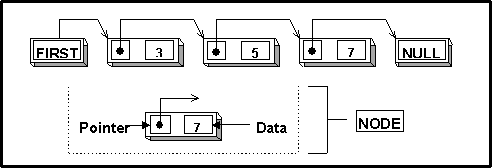
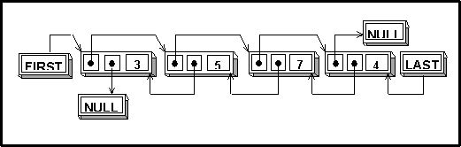
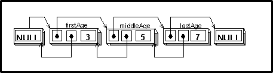
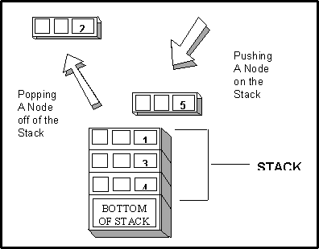

Linked Lists
The C language has excellent support for
arrays. You can create arrays of predefined types such as integers or
doubles, or you can create arrays of your own types and structures. Although
arrays are highly useful constructs, they have some major limitations:
you cannot insert new elements between existing elements, you cannot remove
existing elements, and you have to allocate all of the array's memory
at once (either at compile time or run time). Although there are ways
around the limitations of arrays, these methods are generally inefficient
and involve shuffling large amounts of memory.
|
|
A more elegant way of providing
this functionality is to use linked lists. A linked list is an group of
connected elements called nodes. Each node contains data and pointers
to other nodes.
The list can be constructed
in the following manner: the pointer of the first node points to the second
node, and the pointer of the second node point to the third node and so
on. The pointer of the last node contains null (in this manual,
a pointer which contains null is called a null pointer). |

The advantages of linked lists over arrays
are that the nodes can be located anywhere in memory, new nodes can be
added at any time, and nodes can be added and deleted from the list by
simply changing the value of a few pointers.
Double Linked Lists |
The linked lists used by
CodeBase are double linked lists. A double linked list
is similar to the type of linked list described above except that each
node has two pointers instead of one. The first pointer points to the
next node, while the second points to the previous node. The following
is a standard double linked list. |

This allows you to traverse the linked list
from both directions starting from pointers to the first and last nodes.
In addition, it allows you to remove a node without traversing the list.
|
|
To implement a linked list
using CodeBase, there are two requirements. The first requirment is a
LIST4
structure and the second is a user defined structure for the nodes. Since
the linked list functions are independent of the CodeBase data base management,
a CODE4
structure does not need to be created. |
|
|
The program "LIST1.C"
demonstrates how to traverse, add and remove nodes from a linked list.
|
#include "D4ALL.H"
#ifdef __TURBOC__
extern unsigned _stklen = 10000;
#endif
typedef struct
{
LINK4 link;
int age;
}AGES;
void printList(LIST4 *);
void main( void )
{
LIST4 ageList;
AGES firstAge,middleAge,lastAge;
memset(&ageList,0,sizeof(ageList));
firstAge.age = 3;
middleAge.age = 5;
lastAge.age = 7;
l4add(&ageList,&middleAge);
l4addBefore(&ageList,&middleAge,&firstAge);
l4addAfter(&ageList,&middleAge,&lastAge);
printList(&ageList);
l4remove(&ageList,(void *) &middleAge);
printList(&ageList);
l4pop(&ageList);
printList(&ageList);
}
void printList(LIST4 *list)
{
AGES *agePtr;
printf("\nThere are %d links\n",l4numNodes(list));
agePtr = (AGES *) l4first(list);
while(agePtr != NULL)
{
printf("%d\n",agePtr->age);
agePtr = (AGES *) l4next(list,agePtr);
}
agePtr = (AGES *) list->selected;
}
The LIST4 Structure |
The LIST4
structure contains the control information for the linked list.
It has a counter containing the number of nodes in the linked list
and a pointer to the selected node. |
|
|
Each linked list that your
application contains will have its own LIST4
structure. Before you can use a linked list, the LIST4 structure
must be initialized by setting its contents to zeros. This is accomplished
by the following segment of code: |
|
|
LIST4 ageList ;
memset(&age, 0, sizeof(ageList)); |
The Node Structure |
The node of a CodeBase
linked list is a data structure that you define. This may be structure,
as long as the first member is a LINK4 structure. |
|
|
typedef struct
{
LINK4 link;
int age;
} AGES ; |
|
|
The LINK4
structure contains pointers to the next and previous nodes in the
list. The LINK4
structure also maintains pointers to the first and last nodes of the list.
These pointers are maintained by CodeBase functions so there is no need
for you to access them. |
Adding Nodes to Linked Lists |
There are three functions
that add new nodes to CodeBase linked lists. They are l4add, l4addBefore
and l4addAfter.
The l4add
function adds the new node to the end of the list. This function
requires two parameters: first, a pointer to the linked list's LIST4 structure
and second, a pointer to the node to be added. |
|
|
 Note Note
|
Pointers to node structures are passed to CodeBase linked
list functions as void pointers. Any time you see parameters that are
of type (void *), you can assume that CodeBase expects a pointer to a
node structure. |
|
|
|
|
|
|
|
Here is a code fragment
that assigns some values to the example node structures and adds one of
them to the linked list. |
|
|
AGES firstAge, middleAge,
lastAge;
.
.
.
/* assign values to the nodes */
firstAge.age = 3;
middleAge.age = 5;
lastAge.age = 7;
/* add a node to the linked list */
l4add( &ageList, &middleAge )
;
|
|
|
l4addBefore
inserts a node into the linked list directly before the given node.
l4addAfter
inserts a node directly after the given node. |
|
|
In the example program
LIST1.C, the new nodes are added before and after a node in the linked
list. |
|
|
l4addBefore( &ageList, &middleAge,
&firstAge) ;
l4addAfter( &ageList, &middleAge,
&lastAge ) ;
|
|
|
At this point, the ageList
linked list would look as follows: |

Traversing The Linked List |
Once items have been added
to the linked list, you can then traverse the list from either direction.
|
|
|
The linked list module
lets you retrieve the first and last nodes in the list by calling
l4first
and l4last,
respectively. Both of these functions will return a null pointer if there
are no nodes in the linked list. |
|
|
l4next
returns a pointer to the next node in the linked list. For example,
if you passed l4next
a pointer to middleAge, it would return a pointer to lastAge.
You can also use l4next
to obtain a pointer to the first node by passing it a null pointer.
You can combine these functions to iterate through the list. This is illustrated
by the following code fragment that prints out all the nodes in a linked
list: |
|
|
agePtr = (AGES *) l4first(list);
while (agePtr != NULL)
{
printf("%d\n", agePtr->age);
agePtr = (AGES *) l4next(list, agePtr);
} |
|
|
The first node is located
by l4first.
To avoid compiler errors, the return value from l4first
is cast as (AGES
*). |
|
|
Note |
l4first,
l4last,
l4next,
l4prev,
and l4pop
all return (void
*) pointers that actually point to node. To avoid compiler
errors you must cast the return values of these functions as node pointers. |
|
|
|
|
|
|
|
Next, a while loop
is entered and the contents of the node are printed out. Before the loop
terminates, the next node of the linked list is located by a call to l4next.
After this call, agePtr is either a pointer to the next node, or
null if there are no more items in the list. |
|
|
If you want to move through
the list from the end to the beginning, you would use l4last
and l4prev.
l4prev
behaves the same as l4next
except it returns a pointer to the node before the specified node.
|
The Node Count |
If you need to know how
many nodes there are in a linked list, l4numNodes
may be used. This returns the number of nodes currently in the list. Since
this value is automatically updated each time the list is modified, it
is always current. |
Removing Items From A Linked List |
There are two functions
that remove items from a linked list. The first is l4pop. This
function removes the last node from the linked list. l4pop returns
a pointer to the node being removed, so that you can free the memory
associated with the node. If you want to remove a specific node from anywhere
in the linked list, l4remove
is used. |
|
|
The most powerful feature
of linked lists is the ability to dynamically allocate nodes (i.e.
allocate nodes at run-time). This section will show how you can dynamically
add and remove nodes from linked lists. |
|
|
The "LIST2.C"
is a modification of "LIST1.C". In this program the nodes are
dynamically allocated and freed. |
#include "D4ALL.H"
#ifdef __TURBOC__
extern unsigned _stklen = 10000;
#endif
typedef struct
{
LINK4 link;
int age;
} AGES;
void printList(LIST4 *);
AGES *addAge(LIST4 *,int);
void removeAge(LIST4 *,AGES *);
void freeAges(LIST4 *);
void main( void )
{
LIST4 ageList;
AGES *agePtr;
memset(&ageList,0,sizeof(ageList));
addAge(&ageList,3);
agePtr = addAge(&ageList,5);
addAge(&ageList,7);
addAge(&ageList,6);
addAge(&ageList,2);
ageList.selected = (LINK4 *)agePtr;
printList(&ageList);
removeAge(&ageList,agePtr);
printList(&ageList);
freeAges(&ageList);
printList(&ageList);
}
void printList(LIST4 *list)
{
AGES *agePtr;
printf("\nThere are %d links\n",l4numNodes(list));
if (list->selected != NULL )
printf("The selected
node contains the age %d\n",((AGES *)(list->selected))->age);
agePtr = (AGES *) l4first(list);
while(agePtr != NULL)
{
printf("%d\n",agePtr->age);
agePtr = (AGES *) l4next(list,agePtr);
}
}
AGES *addAge(LIST4 *list,int age)
{
AGES* agePtr;
agePtr = (AGES *) u4alloc(sizeof(AGES));
agePtr->age = age;
l4add(list,agePtr);
return(agePtr);
}
void removeAge(LIST4 *list,AGES *agePtr)
{
l4remove(list,agePtr);
u4free(agePtr);
}
void freeAges(LIST4 *list)
{
AGES *agePtr;
while(agePtr = (AGES *) l4pop(list))
u4free(agePtr);
}
Adding Nodes |
The process of dynamically
adding a node to a linked list involves two steps. First you
must allocate the memory for the node and then add that node to the linked
list using a LIST4
member function. |
|
|
Allocating memory can be
performed using the C operator new.
This operator allocates global memory for the object and calls its constructor.
Since this operator is part of the C language, it is extremely portable
between all operating systems. Alternatively, the CodeBase utility function
u4alloc may
be used to perform portable memory allocation.
The "LIST2.C"
the addAge function is uses u4alloc to
dynamically allocate a node structure and then adds the node to the linked
list. |
|
|
AGES *addAge(LIST4 *list,int age)
{
AGES* agePtr;
agePtr = (AGES *) u4alloc(sizeof(AGES));
agePtr->age = age;
l4add(list,agePtr);
return(agePtr);
}
|
Removing Nodes |
When you dynamically allocate
nodes in a linked list, it is important that you deallocate them when
you are finished with them. If you do not, the memory is not returned
to the system until your application terminates. |
|
|
Deallocation is performed
with the C delete
operator. You provide it a pointer to memory that was previously allocated
with the new
operator, and it is freed and returned to the system. If the memory
was allocated with CodeBase function u4alloc,
u4free
should be called to free the memory to the system. |
|
|
In "LIST2.C"
the removeAge member function removes a node from the linked list
and then frees its memory. |
|
|
void removeAge(LIST4 *list,AGES *agePtr)
{
l4remove(list,agePtr);
u4free(agePtr);
}
|
Cleaning Up The List |
It is always good programming
practice to free up any memory that is allocated by your application.
When you are finished using your linked list, you should deallocate all
of its nodes.This can be accomplished efficiently using the l4pop function
in a while
loop.
The freeAges function
in "LIST2.C" removes and deallocates all of the nodes from the
linked list. |
|
|
void freeAges(LIST4 *list)
{
AGES *agePtr;
while(agePtr = (AGES *) l4pop(list))
u4free(agePtr);
}
|
|
|
In addition to the standard
type of linked list functions, you can also use the linked list functions
to implement stacks and queues. |
Stacks |
A stack is a list of
nodes that can only be added or removed from one end. A deck of playing
cards can be an example of a stack. Cards are added by placing them on
top of the deck (traditionally called pushing a node onto the stack),
and removed by taking the top card from the deck (traditionally
called popping an node from the stack). CodeBase provides two functions,
l4add and
l4pop,
that provide these behaviours. |

Queues |
A queue is similar to stack except
that nodes are added at one end and removed from the other. A line at
the movie box office is an example of a queue. People line up at the back
and leave from the front once they have purchased their tickets. |
|
|
Queues can also be easily
implemented using CodeBase linked lists. To remove a node from the queue,
l4pop
is used. To add a node to the list l4first
and l4addBefore
are used. |